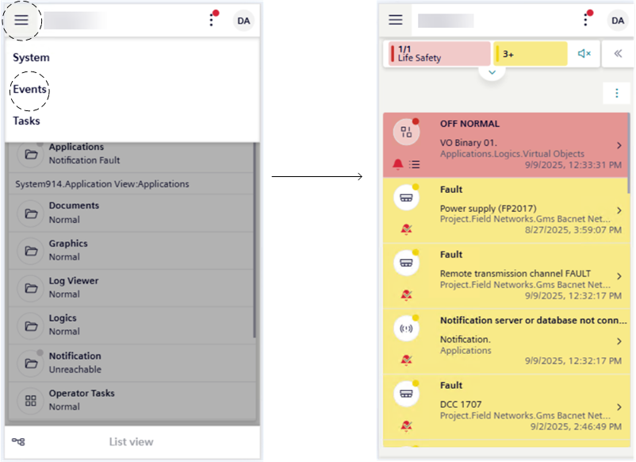
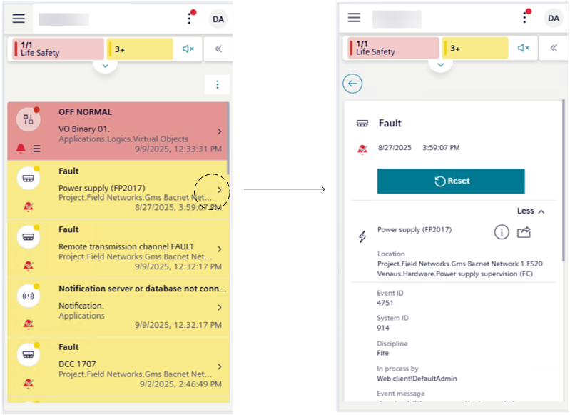

Use Events Workspace in Mobile Flex
In Flex mobile view, when the Events workspace display in the screen, you can view the events (alarms) of the connected Desigo CC system. By navigating to the event details, you can also inspect the event source and send alarm-handling commands (such as Acknowledge, Reset, and so on). For additional reference, see Flex Client web/desktop app Event List and Event Details.
Prerequisites
- You are logged into the Flex web app from your mobile device, and connected to a Desigo CC system.
- The Summary bar, at the top of the screen, provides a compact overview of all the events in the system, grouped by categories. For additional reference, see Use Summary Bar in Mobile Flex.
View the List of Events
- From the mobile Flex web app homepage, tap > Events.
- The screen displays a list of the events of the connected Desigo CC system. Each event occupies one line.
- Events are arranged by state (unacknowledged first), then by category (most severe first), and then by date (newest on top).
- Swipe up or down to scroll through the list.

Filter Events
You can filter the list of events in many ways.
Filter by Category
- Show all event lamps in the Summary bar, and tap the lamp whose events belong to the category you want to filter.
- The currently applied filter displays on top of the Event List, which displays accordingly and containing only the events belonging to the category of that event lamp.
Filter by Multiple Criteria
In Filtering Event List, see Filter by Multiple Criteria Simultaneously.
Use Saved Filters
In Filtering Event List, see:
- Save a New Event Filter for Reuse
- Reuse a Saved Event Filter
You can also modify or delete saved filters. In Filtering Event List, see:
- Modify a Saved Event Filter
- Delete Saved Event Filters
Clear Filters
- On top of the event list, tap next to the filter you want to clear.
View Details of an Event
- In small screen devices, the source location appears truncated. To view the full text:
- Long tap the truncated source location to display the full text in a tooltip.
- To view the full details about an event:
- From the event list, tap an event.
- Tap the back arrow on top left of event details to go back to the event list screen.

Handle an Event
With small screen devices (576 pixels or lower), you can only use fast treatment. You cannot handle events also with investigative or assisted treatment.
- From event details you can:
- To interrupt event handling:
- Tap the back arrow on top left of event details.
- Alternatively, tap the back arrow of the browser or press the Back button on your device (Apple/Android).